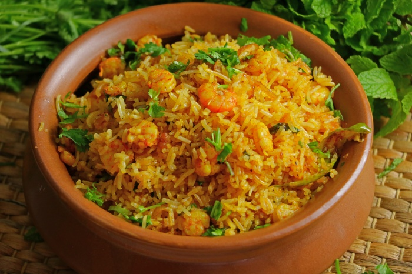

Prawns Pulao

This style of Prawns Pulao is easy to make
and converts your special days into even more special occasions.
This Prawns Pulao involves just frying and tossing. And it is easy and quick to make when you have sudden guests.
All you need is Rice cooked to a fluffy finish.
Ingredients
- 250 gms Prawns
- 220 gms Basmati Rice (Salted, boiled and cooled)
- 1/4 cup Oil
- 1 Sliced Onion
- 4 Green Chillies
- 2 tbsps Green Coriander
- 1 tbsp Ginger Garlic Paste
- 1.5 tbsp Red Mirchi
- 1/2 tsp Turmeric
- 1 tsp Garam Masala
Steps
- Heat Oil, add Turmeric and raw Prawns and fry until water evaporates and
oil separates. Remove them into a bowl.
- In the same pan, add another 2 tsp of oil and fry sliced Onions well.
- When the Onions are fried more than half, add the sliced Green Chillies.
- While the Onions are frying, add Ginger Garlic paste.
Add Mirchi Powder, Salt and Garam Masala and fry well.
- Now add the Prawns and fry for another three minutes.
- Add the fluffy Rice and mix well. Sprinkle chopped Mint and Coriander leaves and Ghee, mix well
- Finally serve it hot with raitha